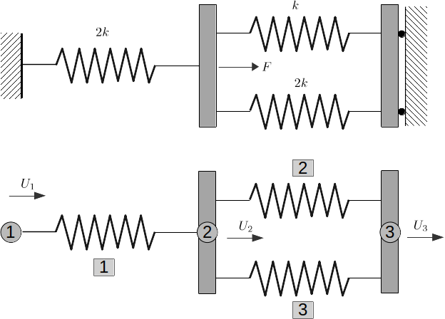

Using CALFEM for Python¶
Connected springs (exs1.m)¶
This example is from the CALFEM manual.
Purpose:
Show the basic steps in a finite element calculation.
Description:
The general procedure in linear finite element calculations is carried out for a simple structure. The steps are:
define the model
generate element matrices
assemble element matrices into the global system of equations
solve the global system of equations
evaluate element forces
Consider the system of three linear elastic springs, and the corresponding finite element model. The system of springs is fixed in its ends and loaded by a single load F.
Import required modules:
In [1]: import numpy as np
In [2]: import calfem.core as cfc
The computation is initialized by defining the topology matrix Edof, containing element numbers and global element degrees of freedom,:
In [3]: Edof = np.array([
...: [1,2],
...: [2,3],
...: [2,3]
...: ])
the global stiffness matrix K (3x3) of zeros,:
In [4]: K = np.matrix(np.zeros((3,3)))
In [5]: print(K)
[[ 0. 0. 0.]
[ 0. 0. 0.]
[ 0. 0. 0.]]
and the load vector f (3x1) with the load F = 100 in position 2.:
In [7]: f = np.matrix(np.zeros((3,1))); f[1] = 100
In [8]: print(f)
[[ 0.]
[ 100.]
[ 0.]]
Element stiffness matrices are generated by the function spring1e. The element property ep for the springs contains the spring stiffnesses k and 2k respectively, where k = 1500.:
In [9]: k = 1500.; ep1 = k; ep2 = 2.*k
In [11]: Ke1 = cfc.spring1e(ep1)
In [12]: print(Ke1)
[[ 1500. -1500.]
[-1500. 1500.]]
In [13]: Ke2 = cfc.spring1e(ep2)
In [14]: print(Ke2)
[[ 3000. -3000.]
[-3000. 3000.]]
The element stiffness matrices are assembled into the global stiffness matrix K according to the topology.:
In []: cfc.assem(Edof[0,:], K, Ke2)
Out[16]:
matrix([[ 3000., -3000., 0.],
[-3000., 3000., 0.],
[ 0., 0., 0.]])
In []: cfc.assem(Edof[1,:], K, Ke1)
Out[17]:
matrix([[ 3000., -3000., 0.],
[-3000., 4500., -1500.],
[ 0., -1500., 1500.]])
In []: cfc.assem(Edof[2,:], K, Ke2)
Out[18]:
matrix([[ 3000., -3000., 0.],
[-3000., 7500., -4500.],
[ 0., -4500., 4500.]])
The global system of equations is solved considering the boundary conditions given in bc.:
In [19]: bc = np.array([1,3])
In [20]: a, r = cfc.solveq(K, f, bc)
In [21]: print(a)
[[ 0. ]
[ 0.01333333]
[ 0. ]]
In [22]: print(r)
[[-40.]
[ 0.]
[-60.]]
Element forces are evaluated from the element displacements. These are obtained from the global displacements a using the function extract.:
In [23]: ed1 = cfc.extractEldisp(Edof[0,:], a)
In [24]: print(ed1)
[ 0. 0.01333333]
In [25]: ed2 = cfc.extractEldisp(Edof[1,:], a)
In [26]: print(ed2)
[ 0.01333333 0. ]
In [27]: ed3 = cfc.extractEldisp(Edof[2,:], a)
In [28]: print(ed3)
[ 0.01333333 0.
The spring forces are evaluated using the function spring1s.:
In [29]: es1 = cfc.spring1s(ep2,ed1)
In [30]: print(es1)
40.0
In [31]: es2 = cfc.spring1s(ep1,ed2)
In [32]: print(es2)
-20.0
In [33]: es3 = cfc.spring1s(ep2,ed3)
In [34]: print(es3)
-40.0
One-dimensional heat flow (exs2.py)¶
This example is from the CALFEM manual.
Purpose:
Analysis of one-dimensional heat flow.
Description:
Consider a wall built up of concrete and thermal insulation. The outdoor temperature is −17 ◦C and the temperature inside is 20 ◦C. At the inside of the thermal insulation there is a heat source yielding \(10 ~W/m^2\).

The wall is subdivided into five elements and the one-dimensional spring (analogy) element spring1e is used. Equivalent spring stiffnesses are ki = λ A/L for thermal conductivity and ki = A/R for thermal surface resistance. Corresponding spring stiffnesses per m2 of the wall are:
k1 = 1/0.04 = 25.0 W/K
k2 = 1.7/0.070 = 24.3 W/K
k3 = 0.040/0.100 = 0.4 W/K
k4 = 1.7/0.100 = 17.0 W/K
k5 = 1/0.13 = 7.7 W/K
A global system matrix K and a heat flow vector f are defined. The heat source inside the wall is considered by setting f4 = 10. The element matrices Ke are computed using spring1e, and the function assem assembles the global stiffness matrix.
The system of equations is solved using solveq with considerations to the boundary conditions in bc and bcVal. The prescribed temperatures are T1 = −17 ◦C and T2 = 20◦C.
Necessary modules are first imported.:
import numpy as np
import calfem.core as cfc
Next, the element topology is defined:
Edof = np.array([
[1,2],
[2,3],
[3,4],
[4,5],
[5,6]
])
Create stiffness matrix and load vector:
K = np.mat(np.zeros((6,6)))
f = np.mat(np.zeros((6,1)))
f[3] = 10.0
Define element properties and create element matrices for the different material layers.:
ep1 = 25.0
ep2 = 24.3
ep3 = 0.4
ep4 = 17.0
ep5 = 7.7
Ke1 = cfc.spring1e(ep1)
Ke2 = cfc.spring1e(ep2)
Ke3 = cfc.spring1e(ep3)
Ke4 = cfc.spring1e(ep4)
Ke5 = cfc.spring1e(ep5)
Assemble all element matrices into the global stiffness matrix:
cfc.assem(Edof[0,:], K, Ke1)
cfc.assem(Edof[1,:], K, Ke2)
cfc.assem(Edof[2,:], K, Ke3)
cfc.assem(Edof[3,:], K, Ke4)
cfc.assem(Edof[4,:], K, Ke5)
print("Stiffness matrix K:")
print(K)
Define the boundary conditions and solve the system of equations:
bc = np.array([1,6])
bcVal = np.array([-17.0, 20.0])
a,r = cfc.solveq(K, f, bc, bcVal)
print("Displacements a:")
print(a)
print("Reaction forces r:")
print(r)
Calculate the element temperatures and calculate the heat flow:
ed1 = cfc.extractEldisp(Edof[0,:], a)
ed2 = cfc.extractEldisp(Edof[1,:], a)
ed3 = cfc.extractEldisp(Edof[2,:], a)
ed4 = cfc.extractEldisp(Edof[3,:], a)
ed5 = cfc.extractEldisp(Edof[4,:], a)
q1 = cfc.spring1s(ep1, ed1)
q2 = cfc.spring1s(ep2, ed2)
q3 = cfc.spring1s(ep3, ed3)
q4 = cfc.spring1s(ep4, ed4)
q5 = cfc.spring1s(ep5, ed5)
print("q1 = "+str(q1))
print("q2 = "+str(q2))
print("q3 = "+str(q3))
print("q4 = "+str(q4))
print("q5 = "+str(q5))
Running this code produces the following output:
Stiffness matrix K:
[[ 25. -25. 0. 0. 0. 0. ]
[-25. 49.3 -24.3 0. 0. 0. ]
[ 0. -24.3 24.7 -0.4 0. 0. ]
[ 0. 0. -0.4 17.4 -17. 0. ]
[ 0. 0. 0. -17. 24.7 -7.7]
[ 0. 0. 0. 0. -7.7 7.7]]
Displacements a:
[[-17. ]
[-16.43842455]
[-15.86067203]
[ 19.23779344]
[ 19.47540439]
[ 20. ]]
Reaction forces r:
[[ -1.40393862e+01]
[ -5.68434189e-14]
[ 0.00000000e+00]
[ 0.00000000e+00]
[ 0.00000000e+00]
[ 4.03938619e+00]]
q1 = 14.0393861892
q2 = 14.0393861892
q3 = 14.0393861892
q4 = 4.03938618922
q5 = 4.03938618922